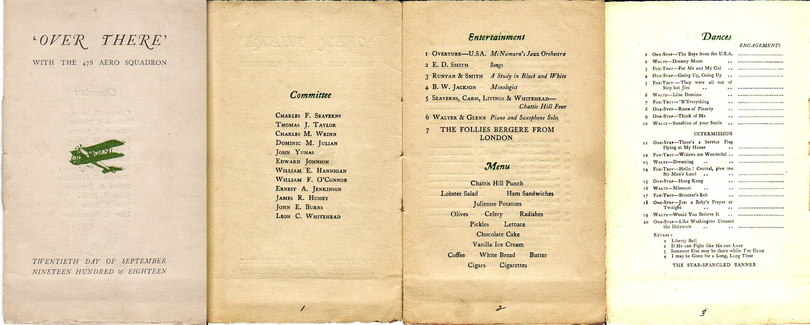

My Grandfather, Herbert Weet, enlisted in the army and was eventually assigned to the 66th Aero Squadron at Kelly Field, San Antonio, Texas. The 66th was redesignated as the 478th Aero Squadron as part of the AEF. My grandfather saved an event program which included a complete roster of the Unit.

|
| Captain Albert Bloom | New York City |
| 1st Lt. John A. Connell | Ridgefield, Conn. |
| 1st Lt. William M. Halley | New York City |
| 1st Lt. Edmund H. Gibson | Richmond, Va. |
| 1st Lt. Meverell B. Van Doren | Richmond, Va. |
| 2nd Lt. Allison R. Turney | Newport News, Va. |
|
| Charles F. Seaverns | Roxbury, Mass. |
| Thomas J. Taylor | Fitchburg, Mass. |
|
| Charles M. Wrinn | Wallingford, Conn. |
| Bedford C. Gordon | Fort Worth, Tex. |
| Robert Finton | St. Paul, Min. |
| Arthur J. Lyons | Brookline, Mass. |
| James Jeffers | Hartford, Conn. |
| William E. Cox | Portland, Ore. |
| James R. Carss | Brooklyn, N.Y. |
| Harry H. Mauthe | Utica, N.Y. |
| William B. Burnham | Goffstown, N.H. |
|
| Dominic M. Julian | North Adams, Mass. |
| George F. Ketterman | Portland, Ore. |
| Henry D. Williamson | Charlotte, N.C. |
| John Yuhas | Passaic, N.J. |
| Frank H. Sullivan | New Haven, Conn. |
| Edward Johnson | Portland, Ore. |
| Gilbert A. Campbell | East Dedham, Mass. |
| Alfred J. Beaupre | Holyoke, Mass. |
| William E. Hannigan | Fitchburg, Mass. |
| Ernest W. Christensen | Gloucester, Mass. |
| John D. Park | Riverside, Ore. |
| Kenneth S. Edgely | Alexandria Bay, N.Y. |
|
| William F. O'Connor | Long Island City, N.Y. |
| Donald R. Russell | Searsport, Maine |
| Warren A. Blair | Charleston, Mass. |
| Goldwin P. Wilson | White Salmon, Wash. |
| Julius Zbojan | Newark, N.J. |
| George L. Kagley | The Dalles, Ore. |
| Francis X. Brunelle | Enfield, Conn. |
| John Dodson | Bickleton, Wash. |
| Ernest A. Jenkinson | Lawrence, Mass. |
| Arthur W. Briggs | Beaverton, Ore. |
| Michael F. McNamara | Yonkers, N.Y. |
| Ralph D. Moore | Barneveld, N.Y. |
| William Lawrenson | Providence, R.I. |
| Alfred J. Leger | Gardener, Mass. |
| Fred B. Logan | Bridgeport, Neb. |
| Arthur L. Luques | Tucson, Ariz. |
| John R. Martin | Hartford, Conn. |
|
| Egbert Corwin | Long Island City, N.Y. |
| Francis J. DeSpagno | Brooklyn, N.Y. |
| Frank M. Kenefick | Canton, Mass. |
| Lauren E. Dowell | Detroit, Mich. |
|
| John C. Wynne | San Francisco, Cal. |
| William H. Deitrick | Williamsport, Pa. |
| Edward H. Farrell | Dorchester, Mass. |
| Frederick B. Caylor | Herefrod, Tex. |
| Edward F. Daniels | Jersey City, N.J. |
| Arthur A. Jackson | Freeport, Tex. |
|
| Archie H. Binns | Dot, Wash. |
| Clarence J. Burnett | Indian Orchard, Mass. |
| James E. Connon | Madison, N.J. |
| James J. Duffy | Jersey City, N.J. |
| James R. Hussey | Haverhill, Mass. |
| Thomas J. Rogers | Andover, Mass. |
| Timothy M. Scannell | Springfield, Mass. |
| Glen H. Sherman | Tully, N.Y. |
| George G. Stanton | Portland, Ore. |
| Robert E. Watkins | Omaha, Neb. |
| Herbert P. Weet | Pittsburg, Pa. |
| John P. Winn | Springfield, Mass. |
| George Yudovitz | Fall River, Mass. |
|
| Malcolm L. Aldridge | Creshaw, Mass. |
| Julius Antine | Brooklyn N.Y. |
| Joseph Atherton | Greystone, R.I. |
| Walter Binns | New York City |
| George Boylan | East Orange, N.J. |
| Luther E. Browning | Ontario, Ore. |
| John E. Burns | Niagra Falls, N.Y. |
| Philip H. Carnall | Northampton, Mass. |
| Walter B. Carnsew | Warren, Ohio |
| James Carrio | New York City |
| Roy E. Casida | Kiowa, Kan. |
| Alfred F. Connelly | Newark, N.J. |
| Arne V. Copple | Portland, Ore. |
| Harold L. Corts | Barneveld, N.Y. |
| Patrick L. Cullity | Jersey City, N.J. |
| Russell M. Curry | Philadelphia, Pa. |
| Harvey T. Dionne | Beaverville, Ill. |
| George H. Dolan | Worcester, Mass. |
| Robert J. Dowty | Fort Benton, Mont. |
| Herbert D'Sinter | Philadelphia, Pa. |
| George H. Elliott | Portland, Ore. |
| Benjamin F. Ellis | Liberty, Tex. |
| Rudolph Etleman | Fairhaven, Mass. |
| Paul L. Fitzgerald | Springfield, Mass. |
| LeRoy E. Foster | Waterbury, Mass. |
| Rudolph O. Gay | Elkhart, Ind. |
| Raymond C. Gennett | Indian Orchard, Mass. |
| Charles S. Goldman | Akron, Ohio |
| Lysle K. Goyette | Chicago, Ill. |
| Clarence E. Hansell | Llanarch, Pa. |
| Charles Harkins | Brooklyn, N.Y. |
| Wash Hartman | Nusqually, Wash. |
| Edmund E. Haskell | Princeton, Ill. |
| Hollis Hathaway | New Bedford, Mass. |
| Michael J. Healy | New York City |
| Bert Hodgson | Cleveland, Ohio |
| Frank B. Hodgson | Cleveland, Ohio |
| Frederick T. Horton | Lincoln, Neb. |
| Nicholas A. Karho | Astoria, Ore. |
| Frank A. Kelley | Wilkes-Barre, Pa. |
| Emmons V. Knox | Portland, Ore. |
| Morris Kosser | Cleveland, Ohio |
| Herbert L. Leusher | East Weare, N.H. |
| Charles H. Lockoff | Paterson, N.J. |
| Alfred Lussier | Ware, Mass. |
| John E. Madden | New York City |
| Timothy J. Mahoney | Bradford, Mass. |
| John H. Martin | Brooklyn, N.Y. |
| Thomas F. McNamara | Lawrence, Mass. |
| James J. McNamee | Portchester, N.Y. |
| Harry McNeilly | Worcester, Mass. |
| Joseph E. Michalek | Chinook, Mont. |
| Carlo Miglino | Brooklyn, N.Y. |
| Harry H. Morton, Jr. | Newark, N.J. |
| Gromenos Moshos | Johnstown, Pa. |
| Charles E. Murphy | Providence, R.I. |
| Michael F. Neary | Scranton, Pa. |
| Rasmus A. Nielsen | Lynn, Mass. |
| Robert Norton | Jersey City, N.J. |
| Abraham Pere | New York City |
| George Petersen | New York City |
| Carl W. Phillips | Portland, Ore. |
| Rudolph Pollini | Lindenhurst, L.I. |
| James Pope | Brooklyn, N.Y. |
| Leonard H. Pratt | Saginaw, Mich. |
| Frank Read | Johnston, R.I. |
| Milton Richardson | Rochster, N.Y. |
| Ray A. Roberts | Olean, N.Y. |
| John M. Rowe | Fort Benton, Mont. |
| Harry A. Ryder | East Orange, N.J. |
| Stephen J. Schaefer | Portland, Ore. |
| Frank A. Smith | Portland, Ore. |
| George A. Smith | Providence, R.I. |
| Harry E. Smith | Goldendale, Wash. |
| John M. Speed | Hayward, Cal. |
| Arnold B. Syverson | Beaverton, Ore. |
| Edgar Thomas | Vandale, Ark. |
| Charl H. Thuring | New York City |
| John C. Van Wyk | Erieville, N.Y. |
| Arthur E. Wells | Holyoke, Mass. |
| Leon C. Whitehead | New York City |
| Everett Willard | Middleboro, Mass. |
| Harry B. Williams | Moline, Ill. |
"OVER THERE" with the 478 Aero Squadron, 20 Sep 1918.